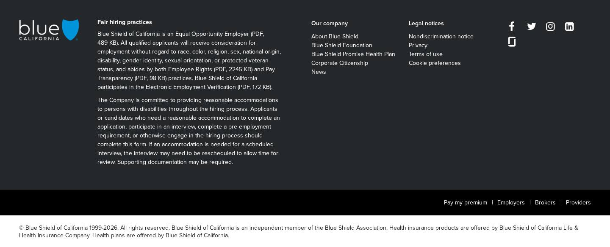
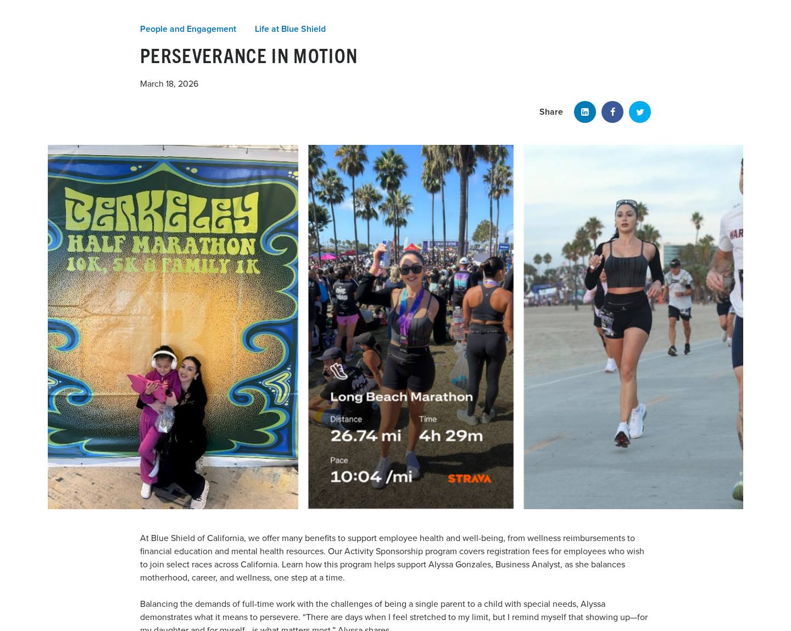
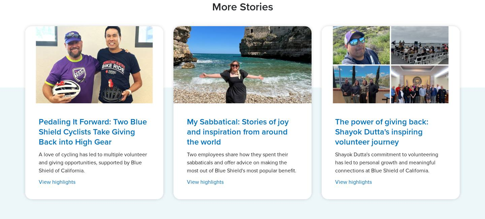
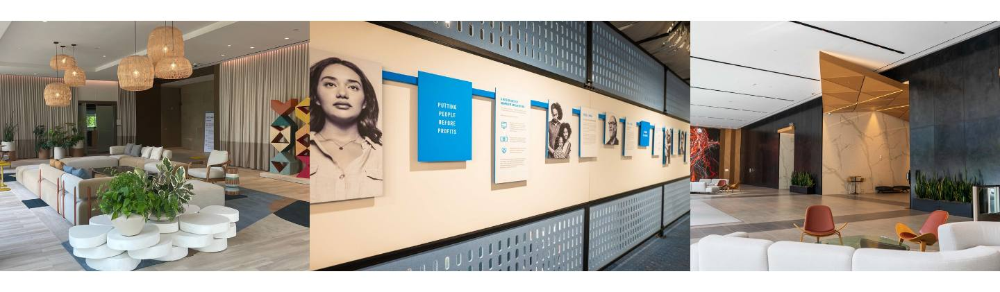
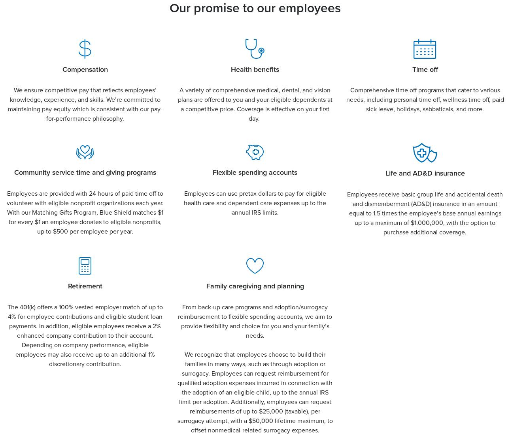
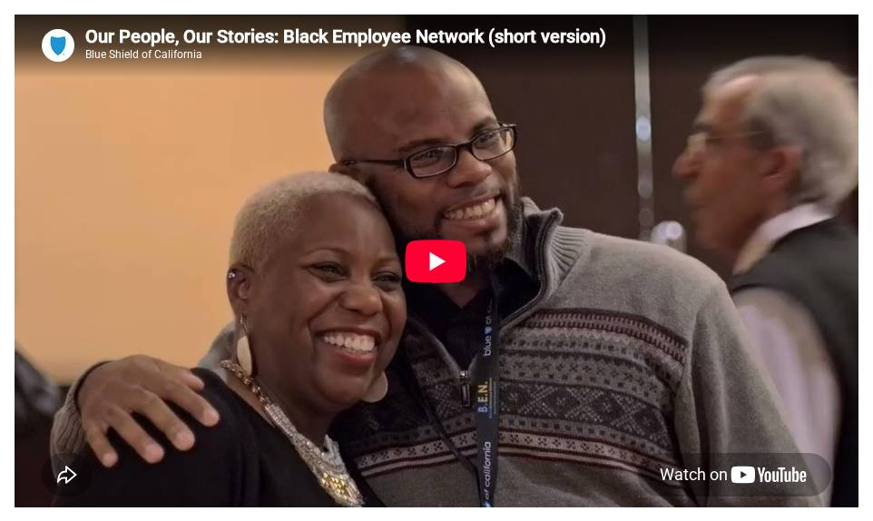
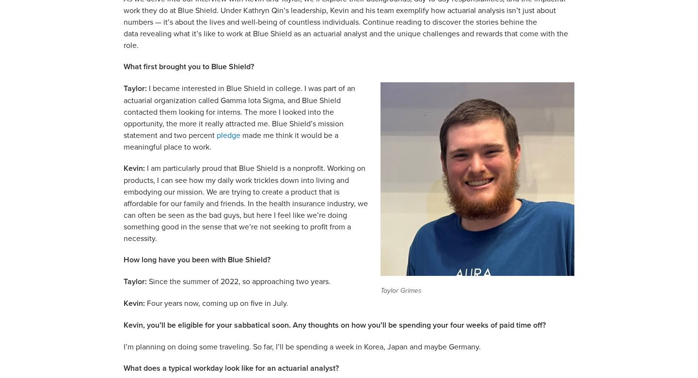
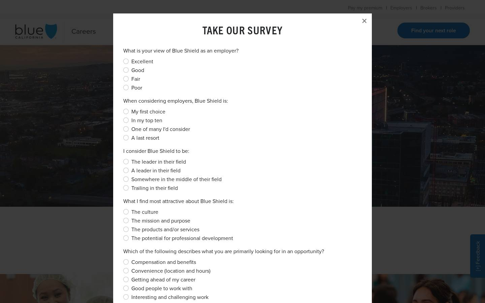

77
Pages
11
Observed components
Blog article
SOW template
Layout
Article header (Role/Topic categories, title, date, authors, LinkedIn/Facebook/X share), optional hero image (59 of 77), rich-text body with inline images/columns (30), YouTube video (14), image gallery (3), “More Stories” 3-card related row.
Automated layout cluster(s): image-hero-content-page (59) / text-led-content-page (18)
Template screenshot
Components
| Screenshot | Observed component | Variations | Complexity | SOW target |
|---|---|---|---|---|
| Global Header & Navigation (desktop nav / mobile off-canvas) | desktop: utility bar + horizontal nav + CTA, mobile: hamburger off-canvas menu | High | header (core) | |
 | Global Footer (fair hiring, links, social) | default | Medium | footer (core) |
 | Story Article Header (categories, date, authors) | with hero image, without hero image | Medium | article-header (custom) |
| Social Share Buttons | default | Low | share (custom) | |
 | Story Cards (tiles) | related “More Stories” (auto), listing grid, curated row | Medium | cards · options related / grid |
 | Image Gallery with Lightbox | gallery + feature tiles (home), standalone 3-up | Medium | gallery (custom) + modal |
 | Content Section Styles (centered title, blue band, white text) | default | Low | section styles (core decoration, §1) |
 | Inline Video Embed (YouTube) | default | Low | embed (core) |
 | Text + Image Columns | inline text-image, alternating rows, text over image (white_text) | Medium | columns (core) |
 | Feedback Poll (modal survey) | default | Medium | OUT OF SCOPE — SOW: no web forms with server-side calls |
| no live instance | Job Alerts / Talent Community Sign-up | default | Medium | OUT OF SCOPE — SOW: jobs funnel deep-links to Oracle Recruiting Cloud (native job alerts) |
URLs (77)
/blog/reflections-from-our-2026-interns/blog/perseverance-in-motion/blog/advancing-through-leadership-and-beyond-with-apa-co-chairs-sree-iyyanki-and-tony-hsieh/blog/blue-shield-of-california-internship-program-2024/blog/empowered-to-succeed-moises-bandas-leadership-and-development-journey-6910203/blog/reflections-from-our-2025-interns/blog/asian-american-and-pacific-islander-heritage-month/blog/black-employee-network-celebrates-black-history-month-a-conversation-with-employee-resource-group-co-chairs-karena-bradshaw-and-chetera-watson/blog/a-tribute-to-our-black-employee-network/blog/being-your-authentic-self-in-a-hybrid-work-environment-and-more-with-pride-co-chair-theo-retos/blog/the-power-of-giving-back-shayok-dutta-s-inspiring-volunteer-journey/blog/my-sabbatical-stories-of-joy-and-inspiration-from-around-the-world/blog/empowering-purposeful-change-in-the-workplace-insights-from-our-elevating-women-co-chairs/blog/dont-speak-for-me-speak-with-me/blog/the-best-leaders-make-themselves-available/blog/veterans-bring-talent-and-loyalty-to-the-table/blog/a-great-place-to-do-meaningful-work/blog/joining-the-it-organization-at-blue-shield-of-california-with-lisa-davis-senior-vice-president-chief-information-officer/blog/a-tribute-to-our-employees-of-asian-and-pacific-islander-american-heritage/blog/passion-respect-and-pride-honoring-our-people-of-hispanic-heritage-through-a-culture-of-celebrating-cultures/blog/we-see-and-celebrate-y-for-you/blog/how-our-people-gave-back-to-their-beloved-communities-this-martin-luther-king-day/blog/equal-pay-a-goal-were-committed-to-at-blue-shield/blog/how-blue-shield-elevates-and-supports-our-women-year-round/blog/developing-future-leaders-from-high-school-on-up-blue-shield-partners-with-cristo-rey/blog/eva-durazo-championing-health-equity-at-blue-shield-of-california/blog/customer-service-spotlight-mal-madrigal-medicare-advantage/blog/jack-zhang-embracing-storytelling-and-belonging-at-blue-shield/blog/blue-shield-of-california-internship-program-and-early-career-opportunities/blog/how-sarah-miller-is-nurturing-her-passion-for-healing-communities/blog/how-two-bluesky-leaders-are-championing-mental-health-access-awareness-and-advocacy-for-californias-youth/blog/beyond-the-bedside-how-two-nurses-thrive-at-blue-shield/blog/blue-goes-greener-a-conversation-with-baylis-beard-blue-shields-new-director-of-sustainability/blog/our-people-our-stories-bridget-cordova/blog/sabbatical-stories-our-people-share-tales-of-family-bonds-new-beginnings-and-safari-thrills/blog/a-day-in-the-life-of-a-blue-shield-actuarial-analyst/blog/recruiting-and-mentoring-future-talent-actuarial-manager-joe-sabo-shares-advice-for-landing-a-role-at-blue-shield/blog/how-blue-shield-of-californias-mentorship-program-fosters-career-growth-and-development/blog/celebrating-a-record-breaking-year-of-giving-back-in-2023/blog/an-inside-look-into-the-role-of-a-blue-shield-of-california-pharmacist/blog/from-kangaroo-encounters-to-lifesaving-endeavors-three-blue-shield-employees-share-their-sabbatical-adventures/blog/how-kelly-aaron-uses-her-free-time-to-make-meaningful-change-for-others/blog/how-salina-wong-is-helping-reimagine-pharmacy-care-at-blue-shield-of-california/blog/how-a-special-investigations-unit-manager-fosters-teamwork-and-transparency-at-blue-shield/blog/how-one-nurse-is-transforming-health-care-without-wearing-scrubs-to-work/blog/how-three-blue-shield-employees-recharged-and-reconnected-on-sabbatical/blog/giving-back-to-our-community-ricquels-volunteer-story/blog/how-working-at-blue-shield-improved-sheridans-health-and-wellbeing/blog/mission-values-in-action-awards-our-highest-honor-6893914/blog/how-blue-shield-celebrated-employee-appreciation-week/blog/the-actuarial-study-program-supporting-the-career-growth-of-our-actuaries/blog/looking-back-on-a-year-of-giving-at-blue-shield/blog/how-blue-shield-is-cultivating-a-mindset-of-gratitude/blog/inaugural-ready-to-lead-rosemarie-pham-leadership-excellence-award-presented-to-andre-mayberry/blog/releases-20221130-6884118/blog/mission-report-our-engaged-employees/blog/to-the-call-and-beyond-a-blue-shield-salute-to-customer-experience/blog/from-linkedin-live-let-s-talk-career-opportunities-in-health-care/blog/what-we-stand-for-our-core-values-in-action/blog/jumpstart-your-health-care-career/blog/responding-to-covid-fatigue-our-people-need-more-support/blog/corporate-citizenship-award-recipient-mari-corbin/blog/uplifting-communities-is-part-of-my-culture/blog/creating-more-breathing-space-for-our-people-to-rejuvenate/blog/find-your-passion-and-it-will-grow/blog/finding-purpose-and-passion-at-work/blog/my-perfect-destination-the-intersection-of-passion-and-profession/blog/when-a-corporate-mission-becomes-deeply-personal/blog/connecting-values-to-my-work/blog/alvins-story-making-an-impact-while-helping-your-friends-and-family/blog/marias-story-aligning-values-working-with-blue-shield-of-california/blog/health-and-environmental-sustainability/blog/life-at-blue-shield/blog/embracing-sabbatical-bliss-personal-journeys-of-refreshment-and-renewal/blog/lessons-and-advice-from-mentors-and-proteges-at-blue-shield-of-california/blog/looking-for-your-next-tech-job/blog/supporting-our-future-leaders-blue-shields-internship-program